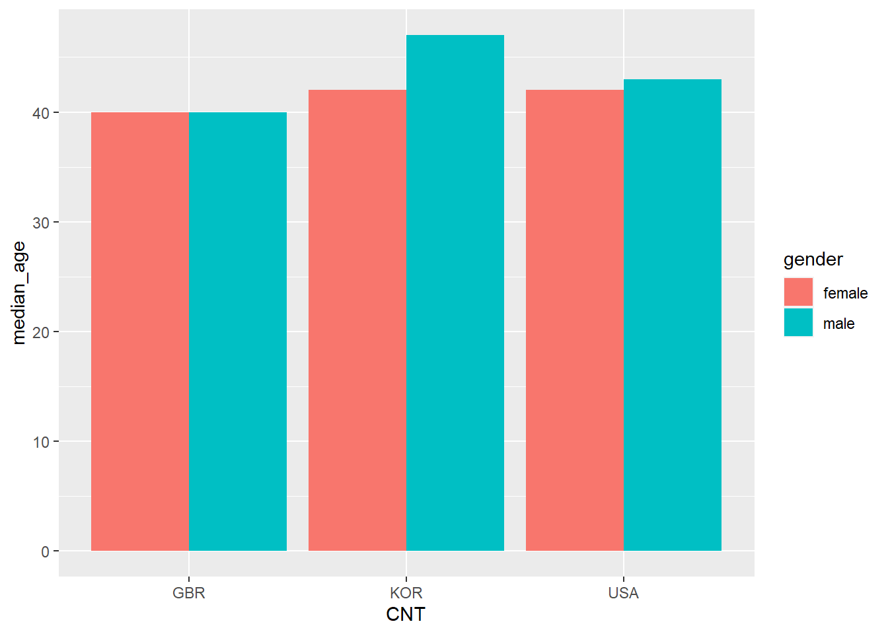

── Attaching packages ─────────────────────────────────────── tidyverse 1.3.2 ──
✔ ggplot2 3.4.0 ✔ purrr 0.3.5
✔ tibble 3.1.8 ✔ dplyr 1.0.10
✔ tidyr 1.2.1 ✔ stringr 1.4.1
✔ readr 2.1.3 ✔ forcats 0.5.2
── Conflicts ────────────────────────────────────────── tidyverse_conflicts() ──
✖ dplyr::filter() masks stats::filter()
✖ dplyr::lag() masks stats::lag()Quarto Help
0.1 An example chapter
0.1.1 Why Quarto
We are looking to create a course book to guide students focused on STEM education stats. This booklet will include theory, code examples, questions, answers and seminar tasks all in one location. There will be a clear thread of R tasks to exemplify the theory topics, running throughout, so students can get plenty of practice. We are hoping that students will use this booklet to build their own models for their assignments and it will support them in dealing with major, rather scary looking, datasets.
Quarto is pretty new, so you might find that searching for help to do things in rmarkdown (the older version of Quarto), will give you the support that you need. The examples here will help you create a website for the MA STEM course, but quarto also allows you to create powerpoints, Word docs and pdfs for publication.
0.1.2 Basic formatting
You can write a .qmd file much like you would write a plain text document, but it does also allow basic formatting using a language called markdown. Markdown lets you have text that is **bold**, *italic*and <u>underlined</u>, it allows for linking actions, such as hyperlinks to webpages through [webpages](https://en.wikipedia.org/wiki/Main_Page) and inserting images :
Make sure that your images are in the images/ folder and that the address you use includes the image type, here it is images/brock.jpg. Try to give your images sensible names or place the images for your chapter in a subfolder of the images folder, e.g. images/chpt4/amy.jpg.
0.1.3 This is sub header
### This is sub header #### This is an even smaller header
For something that might be less important, you can have multiple levels of subheading by adding more #s, for example ##### would be a level 5 heading, the more #s you have the smaller the heading.
0.1.4 Lists
0.1.4.1 You can create a list:
- this is a list
- of bullet pointed
- created by
- items, which can be
- indented with four spaces
- before the hyphen `-`- this is a list
- of bullet pointed
- created by
- items, which can be
- indented with four spaces
- before the hyphen
-
0.1.4.2 You can also have:
1. numbered lists
2. by using numbers followed by
3. bullet points
4. You can embed [links](https://stackoverflow.com/questions/73066792/how-to-create-lettered-lists-using-quarto) in lists- numbered lists
- by using numbers followed by
- bullet points
- You can embed links in lists
0.1.5 Quotes and references
If someone has said something interesting, you can block quote them by using the right arrow > quote goes here.
Dirt glitters as long as the sun shines. – Goethe
If you want to find out more about how to format your writing in quarto take a look at one of the helpsheet or the help website
When writing you might want to add academic references to your quarto document. This is very straight forward using `bibtex` - a structured way of recording references. You can find bibtex entries for most academic references through the google scholar cite menu:

You can also hand-craft your own references if you can’t find them online. Once you have your bibtex code, place it in the `references/mastemr.bib` file. The name of the reference is at the top of each entry, in the example below kuhn1970structure:
@book{kuhn1970structure,
title={The structure of scientific revolutions},
author={Kuhn, Thomas S},
volume={111},
year={1970},
publisher={Chicago University of Chicago Press}
}To add a reference to your writing use [@kuhn1970structure] to get (Kuhn 1970). If you just require the year use [-@kuhn1970structure] - (1970). If you want to include multiple references together, use the ;, e.g. [@kuhn1970structure; @stoet2018gender] - (Kuhn 1970; Stoet and Geary 2018).
All your references will be included at the bottom of the website (go check them out!) and students can quickly access reference information by hovering over the references inline in the text. Depending on the fields you provide and the format, e.g. @book and @article, the references will display differently.
0.1.6 Using datasets in your chapters
0.1.6.1 Loading datasets
For the creation of this book we are keeping the datasets in the /data/ folder. I’ll create a separate chapter on loading data from web locations and local hard drives that students can refer to, so you can reference that in your chapters without having to repeat yourselves. To use the datasets you can load them from the data folder using the readRDS(<location>), .rds files are standard format used in R, they are pretty small (think ~30Mb rather than 2Gb) and relatively fast to load.
The PISA datasets are huge, so please speak with me about which dataset you need, which year, which columns and which countries. I’ll then produce a much smaller .rds for you to use.
0.1.7 Including code
One of the joys of using quarto is that it allows you to write R code directly into your .qmd file so the code you are talking about, the results of the code and the write up are all in one place. This has a few benefits:
- you don’t need to keep copy and pasting code and results from R to your support sheets
- if the underlying datasets change any changes automatically filter through
- it’s easy to include the code that you use so students can see exactly what you have done
- students can copy and adapt your code for their own projects.
To add a code chunk we need to place it between ```{r} and ``` lines, the results will be automatically displayed below the code:
As the datasets are so big, you might want to focus on a few countries. Once you have declared an object in one code block you can use it in subsequent code clocks:
Note that there is no output from the above code, it applies a filter and stores <- it, it doesn’t have any print or output commands. Now that we have data loaded we can peek at the top few rows using head(<rows>):
# A tibble: 3 × 2
CNT TC018Q10NA
<chr+lbl> <dbl+lbl>
1 KOR [Korea] 0 [Not checked]
2 KOR [Korea] 0 [Not checked]
3 KOR [Korea] 0 [Not checked]But maybe we want to show the students some code without actually running it. To do this we can pass variables to the code chunks through the use of #| setting: value that tell quarto how to handle each chunk. For example, by adding #| eval: false to the top of the code chunk. The code then displays, but doesn’t run (evaluate):
We might want to do the opposite, to run the code chunk but only display the output and not the code that produced the output. To do this we can add #| echo: false to top of the code chunk:
# A tibble: 3 × 5
CNT n median_age males females
<chr+lbl> <int> <dbl> <dbl> <dbl>
1 GBR [United Kingdom] 2650 40 476 959
2 KOR [Korea] 4068 44 1816 2156
3 USA [United States] 3526 42 1019 1784The above examples show how you can output tables and simple sums to the screen, you might also want to output calculated values and graphs. Imagine we want to add the number of male teachers to a report, in the middle of some text. First we need to calculate this value and store it in an object male_num. Note here that we use the pull(<column>) command, this returns the vector stored in the males column, rather than the column datatype.
Now that this has been calculated we can insert it into our text using the inline `r countries` and `r male_num` commands:
> The number of male teachers in the PISA dataset for `r countries` is `r male_num`
The number of male teachers in the PISA dataset for KOR, GBR, USA is 3311.
The great thing about the above is that if the dataset changes, the names and the number will automatically update.
0.1.8 Including graphs
To add graphs to your booklets use the {r} coding blocks as normal. Create your graph and it should display. You can add a caption to the graph using the #| fig-cap: <text> command:
```{r}
#| fig-cap: median age of teacher by country
# get number of male teachers in total
graph_data <- teacher_df %>%
filter(TC001Q01NA %in% c(1,2)) %>%
mutate(gender = ifelse(TC001Q01NA == 2, "male","female")) %>%
group_by(CNT, gender) %>%
summarise(median_age = median(TC002Q01NA))
````summarise()` has grouped output by 'CNT'. You can override using the `.groups`
argument.```{r}
#| fig-cap: median age of teacher by country
ggplot(data=graph_data,
aes(x=CNT, y=median_age, fill=gender)) +
geom_bar(stat="identity", position = "dodge")
```
0.1.9 Adding tables
You can add tables to your pages, these can be a bit fiddlym check out the advice document
0.1.10 Creating Exercises and different section types
There are several inbuilt section types that come with Quarto for common book sections such as “Note” or “Warning!”. You can access these by surrounding a section with ::: <section-type>. For example:
::: callout-note specifies things to note :::
Note
specifies things to note
:::callout-warning gives warning messages :::
Warning
gives warning messages
There are also callout-important
Important
highlights issues that might break your code
and callout-tip
Tip
gives suggestions on how to do things in a better way
To create your exercise section we do something similar but you might also want to add code:
::: question
Activities and coding tasks look like this
:::
0.1.11 Your task
Kuhn, Thomas S. 1970. The Structure of Scientific Revolutions. Vol. 111. Chicago University of Chicago Press.
Stoet, Gijsbert, and David C Geary. 2018. “The Gender-Equality Paradox in Science, Technology, Engineering, and Mathematics Education.” Psychological Science 29 (4): 581–93.